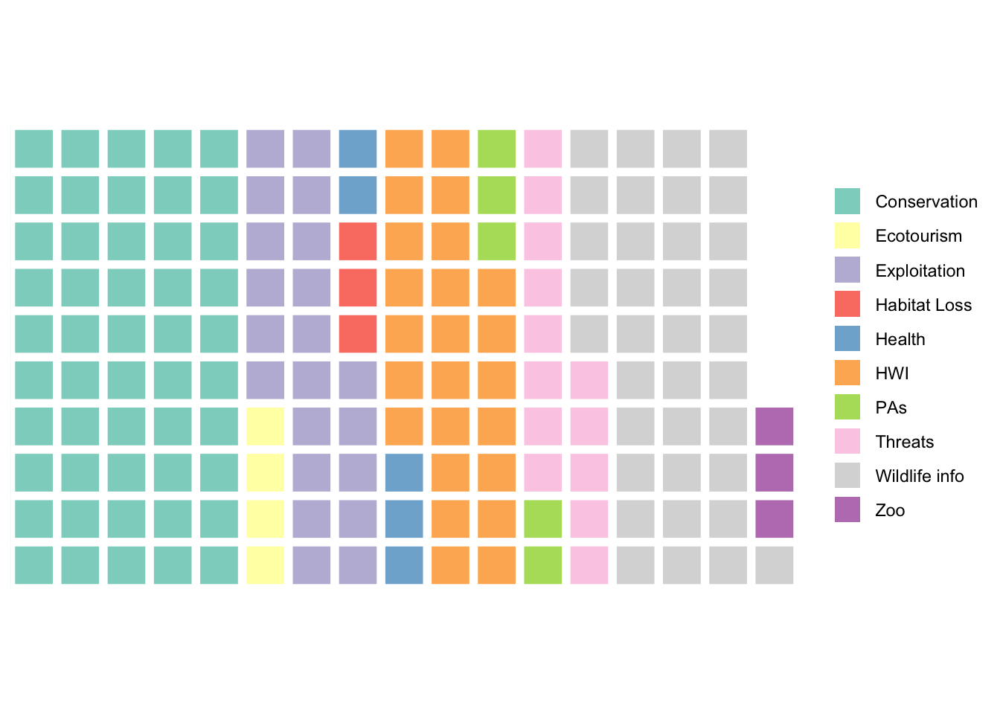
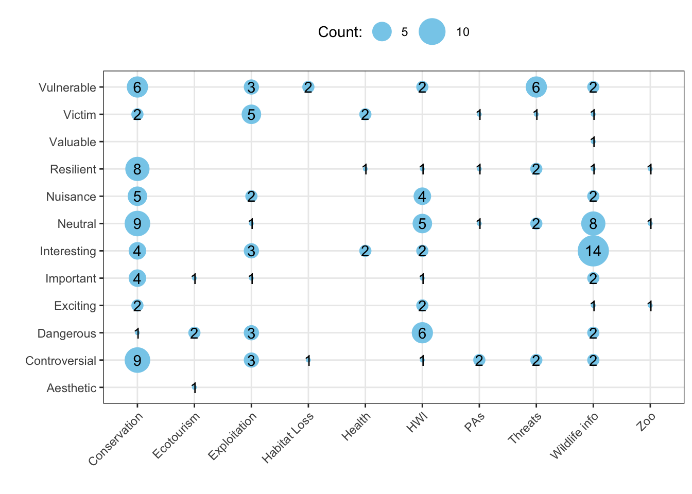
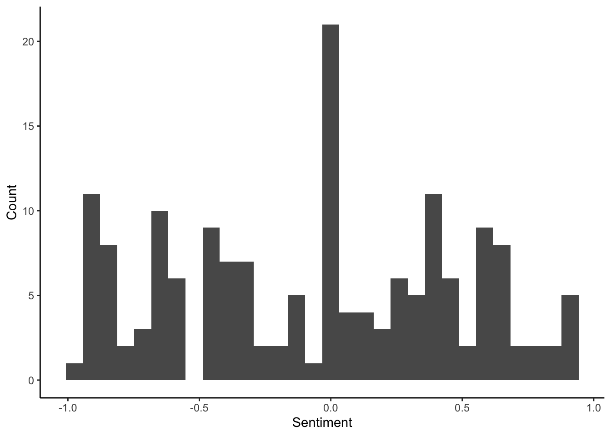
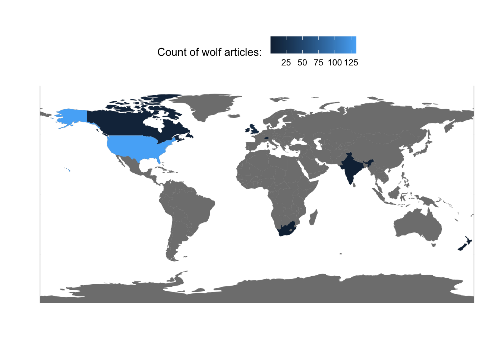
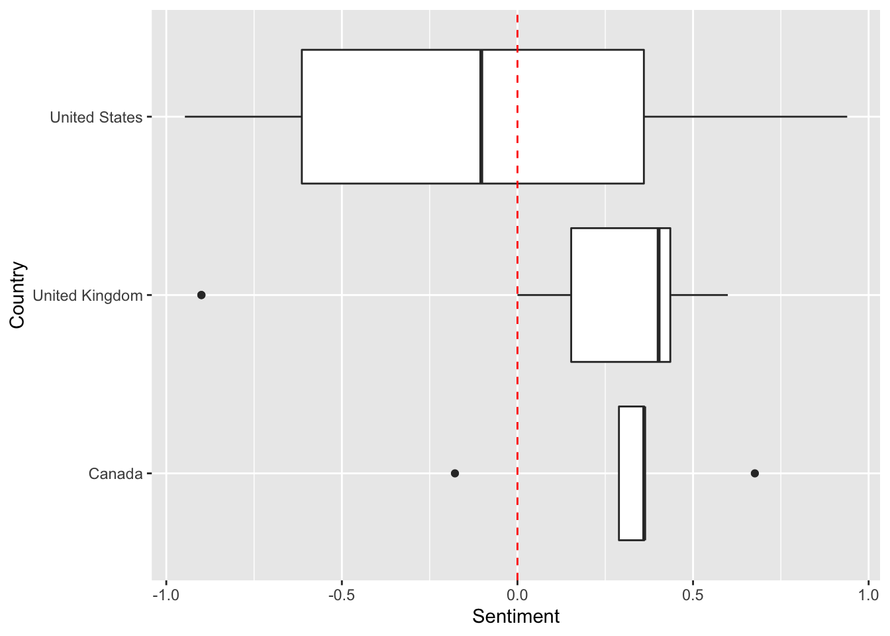

Week 12
2021-11-16
1 Overview
We will be:
- importing the class data for biodiversity media coverage;
- seeing how to subset or summarize these data;
- perform different visualizations of the data.
You are welcome to either follow along with the text and copy-paste the code into the console or read through and then copy the whole script into a new R script in Rstudio.Cloud Enviro Comms Lab. Please make sure that you start a new project using that link. Do not continue using the projects from the Air Quality Lab or the Soil Science Lab.
1.1 Loading packages
First, let’s make sure we have useful functions to help us in this project.
## Libraries for interacting with data
library(readr) # reads in spreadsheet data
library(dplyr) # lets you wrangle data more effectively
## Libraries for plotting
library(ggplot2) # plotting library
library(waffle) # square pie chart (waffle chart) library
## Libraries for spatial data
library(sf) # a nicer way to deal with spatial data
library(spData) # spatial datasets
## Libraries for text data
library(vader) # package that permits for sentiment analysis
library(tidytext) # package for wrangling text data
library(stringr) # package with helpful functions dealing with string, or character/text data.
library(tokenizers) # package to split strings into smaller entities (e.g. messages into words, ngrams, or individual letters)1.2 Importing the class dataset
Next, we’re going to import the class dataset.
CSPdf <- read_tsv("https://raw.githubusercontent.com/EA30POM/Fall2021/main/data/OTEC_CSP.tsv") # use the function read_tsv from readr to pull in a spreadsheet from this URL.
# Then store the output in an object called "CSPdf"
# CSPdf stands for Conservation Science Partners data frameWe can always pull up a viewer of our data by using these commands:
## Version 1:
CSPdf %>% # take CSPdf and feed it into the next command
head( ) %>% # look at the first 6 rows
View( ) # open the spreadsheet viewer
# akin to x --> f(x) --> g(x)
## Alternatively, version 2:
View( head( CSPdf ) ) # akin to g( f( x ) )1.3 Some simple summaries of the data
What topics are in the data?
CSPdf %>% # feed CSPdf into the next command
group_by(Topic) %>% # bucket the data based on the Topics of each article
summarise(Count = n()) # get the counts across all of the articles for every topic## # A tibble: 12 x 2
## Topic Count
## <chr> <int>
## 1 Climate Change 8
## 2 Conservation 171
## 3 Ecotourism 39
## 4 Exploitation 200
## 5 Habitat Loss 12
## 6 Health 57
## 7 HWI 185
## 8 PAs 40
## 9 Pollution 10
## 10 Threats 65
## 11 Wildlife info 158
## 12 Zoo 26## How much data do we have?
dim(CSPdf) # displays number of rows and columns## [1] 971 9nrow(CSPdf) # displays number of row## [1] 971Questions:
- How would I modify this code to get the counts for
Portrayals? - How would I modify this code to get the counts for
Country? - How would I modify this code to get the counts for
Taxon?
1.3.1 Topic fields
- Exploitation: Humans are either illegally or legally hunting, fishing, or harvesting the species
- HWI: Human-wildlife interaction, ranging from sightings to conflict
- PAs: Protected areas
- Wildlife info: Information about species ranging from their natural history to scientific findings
- Threats: Broad threats to biodiversity
- Pollution: Impacts or concerns about pollution on species
- Conservation: Conservation actions or ideas for protecting species
- Health: Species as a disease source or otherwise interacting with human health
- Zoo: Zoo animal media coverage
- Habitat Loss
- Ecotourism
- Climate Change
2 Focusing on a particular taxon
Let’s say that my group decides to focus on wolves. How do I filter the data to just look at wolves?
Easy! I can use the filter function from the dplyr package.
subDF <- CSPdf %>% # take CSPdf and feed it forward into
filter(Taxon=="wolf") # the filter function, selecting only for the rows where Taxon is equal to wolf
# and assign the output to subDF, short for subset data frameQuestions:
- How would I modify this code to focus just on
deer? - How would I modify this code to focus on articles that look at
Exploitationbut include all of the species? - How would I modify this code to focus on articles that came out in the United States and portray species as
Vulnerable?
3 Example analyses
Below, we’ll walk through some example visualizations.
3.1 Summaries for variables
Now that we’ve subset our data, how can we get helpful information about different variables?
summaryDF <- subDF %>% # take the subset data, subDF, and feed it into
group_by(Topic) %>% # a grouping operation to bucket the data based on topic
summarise(Count=n()) # then get the count of articles by topicQuestions:
- How would I modify this code to get the count of articles about wolves by
Country? - How would I modify the code to get the
minimum ormeanvalue forSentimentfor articles about wolves?
We can use a square pie chart, aka a waffle chart, to display this information about the topic by topic breakdown for wolf articles.
names(summaryDF) <- c("name","vals") # changing column names for the summaryDF object
col_ramp <- RColorBrewer::brewer.pal(nrow(summaryDF), "Set3") # selecting a nicer set of colors
waffle(data.frame(summaryDF),colors=col_ramp) # create a waffle plot for the summaryDF object, with the color ramp we have
Questions:
- How would I modify the code above to generate this same type of plot for
Countrycounts for wolves instead? - Is this type of plot appropriate for a variable like
Sentiment?
3.2 What is the relationship between portrayals and topics for wolves?
This is a type of analysis that is called a “cross-tabulation”, or crosstab for short. Every entry in a crosstab table tells you the number of observations that have some specific pairing of variables. For example, how many articles about wolves have the portrayal Vulnerable with the topic Exploitation?
crossDF <- subDF %>% # start from our subset data, subDF
group_by(Topic,Portrayal) %>% # bucket the data based on Topic and Portrayal
summarise(Count=n()) # get the counts for each combination of Topic and Portrayal
# save the output in the object crossDF (short for crosstab data frame)Questions:
- How would I modify this code to create a cross-tab for
CountryandTopic? - How would I modify this code to create a cross-tab for
PortrayalandCountry? - Would it make sense to create cross-tabs for
SentimentandCountry?
Now we can visualize our crosstab.
p <- ggplot(crossDF, aes(Topic, Portrayal, Count)) # initiate a plot using crossDF
p <- p + geom_point(aes(size = Count), colour = "skyblue") # plot points for each combination of topic and portrayal - change the size of the point based on the counts
p <- p + theme_bw() + labs(x="",y="",size="Count:") # modify the plot appearnace
p <- p + scale_size_continuous(range=c(1,10)) + geom_text(aes(label = Count)) # change the range of the point sizes and add text information about the crosstabs
p <- p + theme(axis.text.x = element_text(angle = 45, hjust=1),
legend.position = "top") # change the plot visualization
p # display the plot
Questions:
- How would I modify this code for the other cross-tabs above?
3.3 Visualizing the distribution of sentiment
What is the distribution of sentiment toward wolves?
p <- ggplot(data=subDF, aes(x=Sentiment)) # create a plot from the subDF object using the column Sentiment
p <- p + geom_histogram() # add a histogram to the plot
p <- p + theme_classic() # change the display of the plot
p <- p + labs(y="Count") # change the y-axis label
p # display the plot
How does sentiment vary across topics for wolves?
p <- ggplot(data=subDF, aes(x=Topic,y=Sentiment)) # create a plot using the columns Topic and Sentiment from the subDF data
p <- p + geom_boxplot() # add a boxplot
p <- p + geom_hline(yintercept=0, linetype="dashed", col="red") # add a red dahsed line to demarcate where the positive vs. negative articles are located
p <- p + coord_flip() # switch the x- and y-axis
p # display plot
3.4 Visualizing the distribution of articles across countries
Below, we are going to do several things:
- pull in a dataset that has spatial attributes for all countries
worldDF <- world # store the dataset for the world in worldDF, world data frame- get counts by country for wolf articles
speciesCountryCounts <- subDF %>% # feed the subsetDF forward
group_by(Country) %>% # bucket based on country
summarise(Count=n()) # get counts by country- add on the counts for each country for the wolf articles
speciesMap <- worldDF %>% # take the worldDF object and feed forward
left_join(speciesCountryCounts, by=c("name_long"="Country")) # combine with our count data by country,
# getting the data to match on the columns "name_long" (countries) and "Country"
# store outputs in speciesMap- plot the world’s countries with colors given by article count
p <- ggplot(data=speciesMap, aes(fill=Count)) # use the speciesMap object to create a map
p <- p + geom_sf(aes(fill=Count),color="gray47",size=0.05) # add on the boundaries of countries
p <- p + labs(x="",y="",fill="Count of wolf articles: ") # change the names of the variables as needed
p <- p + theme_minimal() # change the display style
p <- p + theme(legend.position = "top") # move the legend bar to the top
p # display the plot
3.5 Visualizing sentiment across different countries
How would we visualize the distribution of sentiment for wolf media coverage across countries?
First, we probably want to make our lives easier but just focusing on the countries that have more wolf coverage.
subDF %>% # take subDF and feed forward into
group_by(Country) %>% # a grouping step to bucket by Country
summarise(Count=n()) # then get the count of coverage by country## # A tibble: 9 x 2
## Country Count
## <chr> <int>
## 1 Canada 7
## 2 India 2
## 3 Ireland 2
## 4 New Zealand 2
## 5 Russia 2
## 6 South Africa 1
## 7 Switzerland 1
## 8 United Kingdom 14
## 9 United States 133Next, we’re going to further subset the data to just the few countries that have more articles on wolves.
subCountryDF <- subDF %>% # take subDF
filter(Country=="United States" |
Country=="United Kingdom" |
Country=="Canada") # only keep the articles that are coming from the US, Canada, or the UK
# This | vertical bar is the same as saying OR
# Save the output in subCountryDFFinally, we can make a plot of sentiment across countries for wolves.
p <- ggplot(data=subCountryDF, aes(x=Country,y=Sentiment)) # use the subCountryDF object to initiate a plot of country and sentiment
p <- p + geom_boxplot() # add on a boxplot
p <- p + geom_hline(yintercept=0, linetype="dashed", col="red") # add a red dahsed line to demarcate where the positive vs. negative articles are located
p <- p + coord_flip() # switch the x and y-axis
p # display plot
4 Code in entirety
The code below can be copied and pasted into RStudio Cloud for running directly.
###==============================
### Loading packages
###==============================
## Libraries for interacting with data
library(readr) # reads in spreadsheet data
library(dplyr) # lets you wrangle data more effectively
## Libraries for plotting
library(ggplot2) # plotting library
library(waffle) # square pie chart (waffle chart) library
## Libraries for spatial data
library(sf) # a nicer way to deal with spatial data
library(spData) # spatial datasets
## Libraries for text data
library(vader) # package that permits for sentiment analysis
library(tidytext) # package for wrangling text data
library(stringr) # package with helpful functions dealing with string, or character/text data.
library(tokenizers) # package to split strings into smaller entities (e.g. messages into words, ngrams, or individual letters)
###==============================
### Reading in the data
###==============================
CSPdf <- read_tsv("https://raw.githubusercontent.com/EA30POM/Fall2021/main/data/OTEC_CSP.tsv") # use the function read_tsv from readr to pull in a spreadsheet from this URL.
# Then store the output in an object called "CSPdf"
# CSPdf stands for Conservation Science Partners data frame
## Inspecting the data, version 1:
CSPdf %>% # take CSPdf and feed it into the next command
head( ) %>% # look at the first 6 rows
View( ) # open the spreadsheet viewer
# akin to x --> f(x) --> g(x)
## Alternatively, version 2:
View( head( CSPdf ) ) # akin to g( f( x ) )
###==============================
### Data summaries
###==============================
CSPdf %>% # feed CSPdf into the next command
group_by(Topic) %>% # bucket the data based on the Topics of each article
summarise(Count = n()) # get the counts across all of the articles for every topic
###==============================
### Subsetting the data
###==============================
subDF <- CSPdf %>% # take CSPdf and feed it forward into
filter(Taxon=="wolf") # the filter function, selecting only for the rows where Taxon is equal to wolf
# and assign the output to subDF, short for subset data frame
###==============================
### Summarizing the subset
###==============================
summaryDF <- subDF %>% # take the subset data, subDF, and feed it into
group_by(Topic) %>% # a grouping operation to bucket the data based on topic
summarise(Count=n()) # then get the count of articles by topic
###==============================
### Visualizing the distro
### of categories in the data
###==============================
names(summaryDF) <- c("name","vals") # changing column names for the summaryDF object
col_ramp <- RColorBrewer::brewer.pal(nrow(summaryDF), "Set3") # selecting a nicer set of colors
waffle(data.frame(summaryDF),colors=col_ramp) # create a waffle plot for the summaryDF object, with the color ramp we have
###==============================
### Crosstabs
###==============================
crossDF <- subDF %>% # start from our subset data, subDF
group_by(Topic,Portrayal) %>% # bucket the data based on Topic and Portrayal
summarise(Count=n()) # get the counts for each combination of Topic and Portrayal
# save the output in the object crossDF (short for crosstab data frame)
## Visualization of crosstabs
p <- ggplot(crossDF, aes(Topic, Portrayal, Count)) # initiate a plot using crossDF
p <- p + geom_point(aes(size = Count), colour = "skyblue") # plot points for each combination of topic and portrayal - change the size of the point based on the counts
p <- p + theme_bw() + labs(x="",y="",size="Count:") # modify the plot appearnace
p <- p + scale_size_continuous(range=c(1,10)) + geom_text(aes(label = Count)) # change the range of the point sizes and add text information about the crosstabs
p <- p + theme(axis.text.x = element_text(angle = 45, hjust=1),
legend.position = "top") # change the plot visualization
p # display the plot
###==============================
### Visualizing a numeric
### variable like sentiment
###==============================
p <- ggplot(data=subDF, aes(x=Sentiment)) # create a plot from the subDF object using the column Sentiment
p <- p + geom_histogram() # add a histogram to the plot
p <- p + theme_classic() # change the display of the plot
p <- p + labs(y="Count") # change the y-axis label
p # display the plot
p <- ggplot(data=subDF, aes(x=Topic,y=Sentiment)) # create a plot using the columns Topic and Sentiment from the subDF data
p <- p + geom_boxplot() # add a boxplot
p <- p + geom_hline(yintercept=0, linetype="dashed", col="red") # add a red dahsed line to demarcate where the positive vs. negative articles are located
p <- p + coord_flip() # switch the x- and y-axis
p # display plot
###==============================
### Visualizing the distro
### of articles across countries
###==============================
worldDF <- world # store the dataset for the world in worldDF, world data frame
speciesCountryCounts <- subDF %>% # feed the subsetDF forward
group_by(Country) %>% # bucket based on country
summarise(Count=n()) # get counts by country
speciesMap <- worldDF %>% # take the worldDF object and feed forward
left_join(speciesCountryCounts, by=c("name_long"="Country")) # combine with our count data by country,
# getting the data to match on the columns "name_long" (countries) and "Country"
# store outputs in speciesMap
## Create plot
p <- ggplot(data=speciesMap, aes(fill=Count)) # use the speciesMap object to create a map
p <- p + geom_sf(aes(fill=Count),color="gray47",size=0.05) # add on the boundaries of countries
p <- p + labs(x="",y="",fill="Count of wolf articles: ") # change the names of the variables as needed
p <- p + theme_minimal() # change the display style
p <- p + theme(legend.position = "top") # move the legend bar to the top
p # display the plot
###==============================
### Visualizing the distro
### of sentiment across countries
###==============================
subDF %>% # take subDF and feed forward into
group_by(Country) %>% # a grouping step to bucket by Country
summarise(Count=n()) # then get the count of coverage by country
## subset to the countries with the most articles
subCountryDF <- subDF %>% # take subDF
filter(Country=="United States" |
Country=="United Kingdom" |
Country=="Canada") # only keep the articles that are coming from the US, Canada, or the UK
# This | vertical bar is the same as saying OR
p <- ggplot(data=subCountryDF, aes(x=Country,y=Sentiment)) # use the subCountryDF object to initiate a plot of country and sentiment
p <- p + geom_boxplot() # add on a boxplot
p <- p + geom_hline(yintercept=0, linetype="dashed", col="red") # add a red dahsed line to demarcate where the positive vs. negative articles are located
p <- p + coord_flip() # switch the x and y-axis
p # display plot
# Save the output in subCountryDF